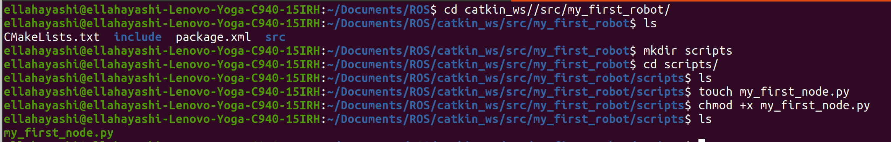
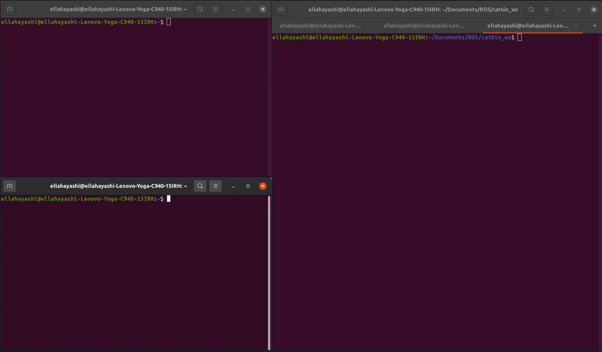

ROS Node
WHAT IS A NODE
A node is a process that performs computation. A node is an executable program inside the Robot. There are many nodes inside one robot, and they all communicate with eachother. Nodes are an extreamly useful functionality of ROS as they reduce code complexity for the developer.
A package as discussed, is an independent unit inside of a robot. A package is empty however, and you need to create nodes inside packages before anything can happen. For example, if a robot has a camera package, where the package handles the camera operations as an independent unit from the others, you can create nodes inside this package. The camera package needs a driver node, as well as an image processing node. The nodes communicate using ROS communication functionalities. You can also have nodes from seperate packages communicate with eachother as well. For example, the image processing node may send data to a motion planning package node.
CREATE PYTHON NODE
Create a new directory called scripts in your robot package, and this is where you will create your first python node in.
{kind=link}
You can now open up your new python file in any text editor you want, and use python to write you’re node functionalities. The following file is a template for a general node.

The node is initialized with rospy.init_node(“name of node”). The commented sections of this template are optional aspects of a node, depending on how you’d like it to function. To keep the node active, enter into a while loop before shutting down.
Before executing your node, you must run the ros master in another script. to run this, type roscore and have it running on the side. Then return to your terminal and run your python file with ‘python my_first_node.py’.
{kind=link}